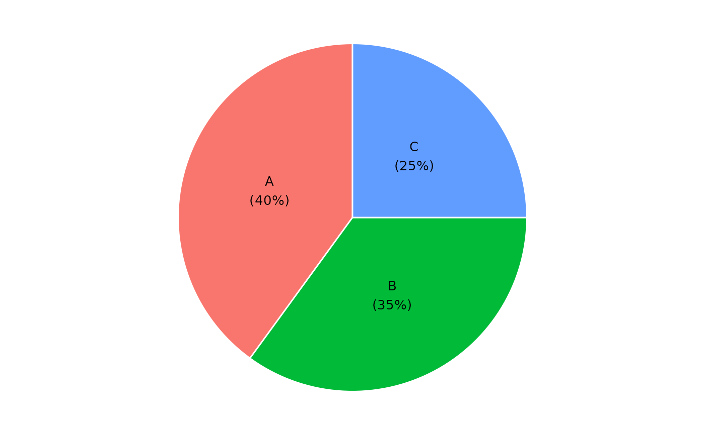

Builds a pie chart from a data frame using one categorical column and one numeric column. Slices are labeled with the category name and percentage share.
Usage
ggpie(
df,
.x,
.y,
.offset = 1,
.color = "white",
.legend = FALSE,
.label = TRUE,
.label_size = 3.5
)Arguments
- df
A data frame.
- .x
Column name (string) of the categorical variable used for the slices.
- .y
Column name (string) of the numeric variable used for the slice values.
- .offset
Numeric scalar (> 0). Controls label position along the slice radius. Default
1places the label at the middle of the slice. Smaller values (e.g.0.5) move the label inward toward the centre; larger values (e.g.2) move it outward toward the edge or beyond, useful for donut-style layouts.- .color
Border color between slices. Default
"white".- .legend
Logical. Show the legend? Default
FALSE.- .label
Logical. Draw
"name\n(pct%)"labels on the slices? DefaultTRUE.- .label_size
Label text size in mm. Default
3.5.
Examples
df <- data.frame(
category = c("A", "B", "C"),
value = c(40, 35, 25)
)
ggpie(df, "category", "value")
